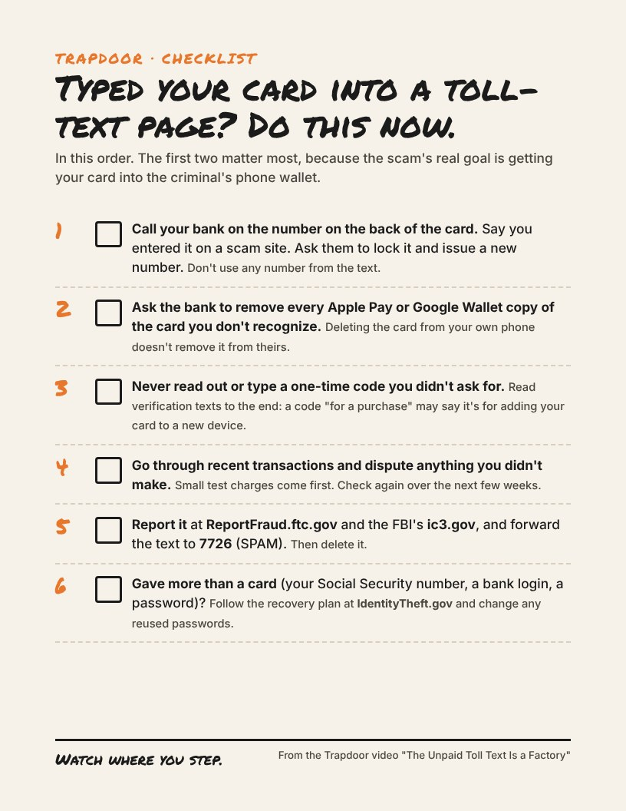

Typed your card into a toll-text page?
Do this now. One page, free, no email needed. It goes with the Trapdoor video "The Unpaid Toll Text Is a Factory".
In this order. The first two matter most, because the scam's real goal is getting your card into the criminal's phone wallet.
- Call your bank on the number on the back of the card. Say you entered it on a scam site. Ask them to lock it and issue a new number. Don't use any number from the text.
- Ask the bank to remove every Apple Pay or Google Wallet copy of the card you don't recognize. Deleting the card from your own phone doesn't remove it from theirs.
- Never read out or type a one-time code you didn't ask for. Read verification texts to the end: a code "for a purchase" may say it's for adding your card to a new device.
- Go through recent transactions and dispute anything you didn't make. Small test charges come first. Check again over the next few weeks.
- Report it at ReportFraud.ftc.gov and the FBI's ic3.gov, and forward the text to 7726 (SPAM). Then delete it.
- Gave more than a card (your Social Security number, a bank login, a password)? Follow the recovery plan at IdentityTheft.gov and change any reused passwords.
